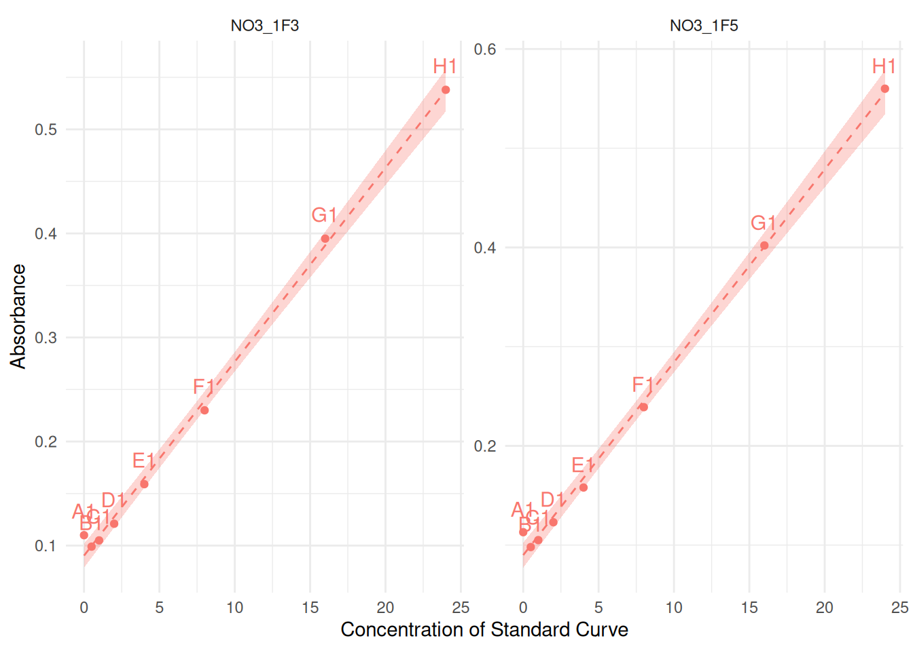
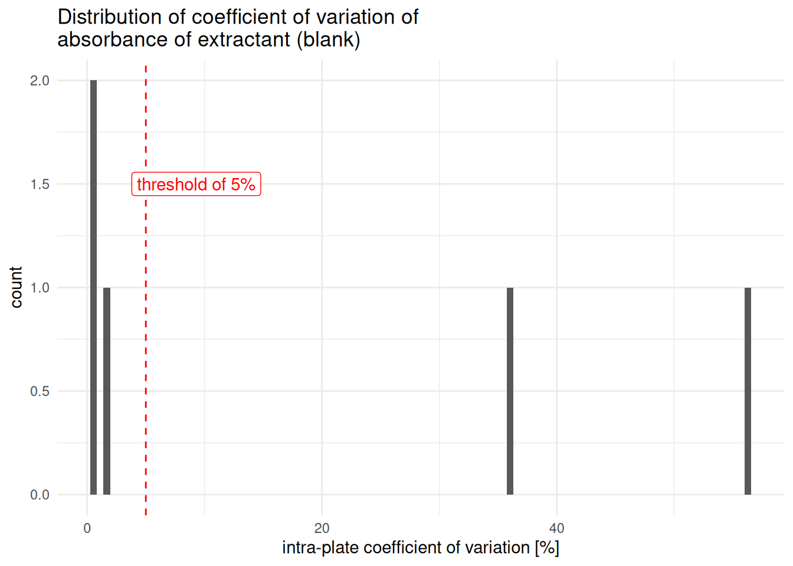
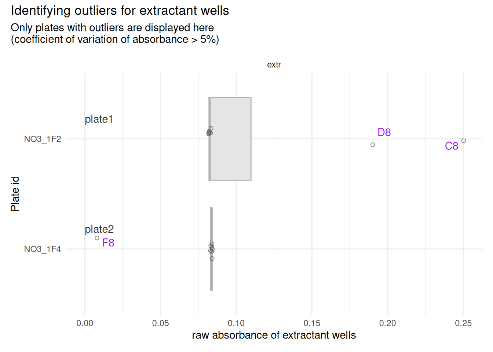
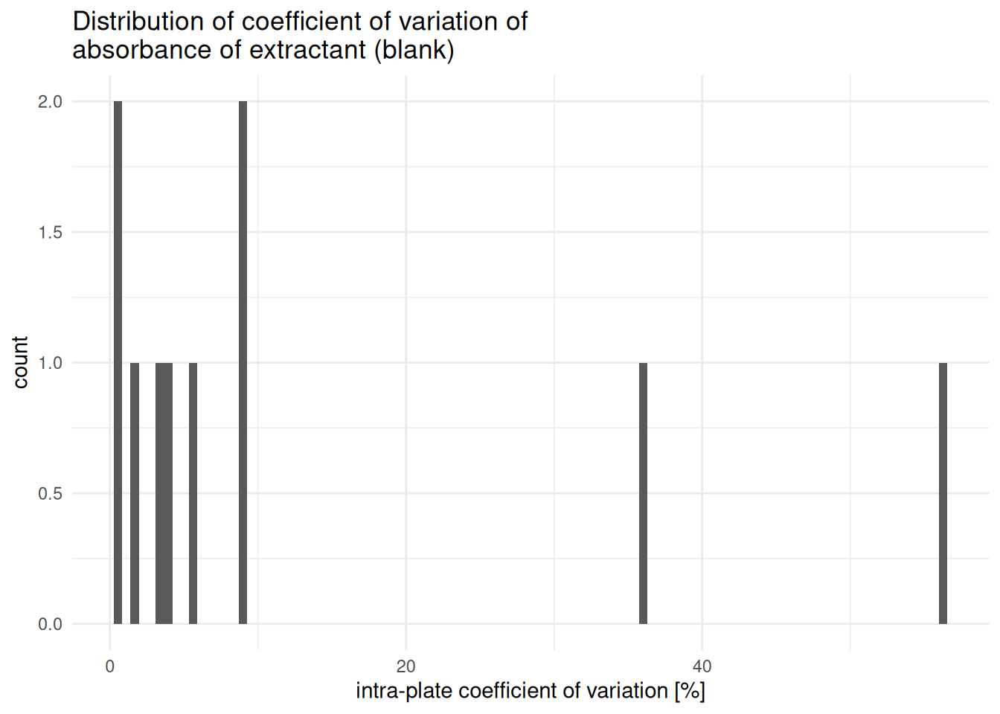
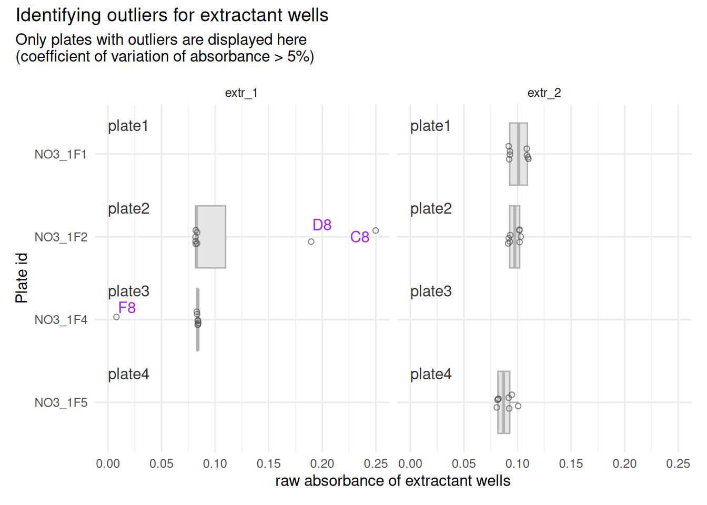

Actively evolving
This pipeline works for its current use cases, but it is still gaining flexibility — some behavior that is hardcoded today may later become a parameter, and new features get added as real use cases come up (e.g. support for multiple extractants per plate was added in response to a user’s needs, and touched a fair amount of the underlying functions). So don’t be surprised if some details shift between versions. If anything here feels more cryptic than the
import-tidyvignette, that’s fair — this one hasn’t had as many passes yet, and it’ll keep getting clearer.
TO DO
- Consider making a function of creating the “to_remove” table for extractant outliers (section 3.3.3, [the multiple-extractants section](#sec-multiple-extr))
- In the function qc_raw_qbs(), separate condition for export plot and show plot. If we export it, we may not want to plot it as an output…
- allow other digit and separator delimitors in extract_curve –> make it a parameter
- the last paragraph of 3.3.3 is confusing –> change the raw data so that we can remove this bit and re-run the coefficient of variation as we should
Introduction
This vignette shows the basic functions that allow the correction of raw absorbance data (abs) to blank-corrected absorbance data, referred to as abs_corrected throughout this package.
This pipeline is adapted to the case where the standard curve solutions were prepared with a different blank than the samples. Because of that, there are 2 parallel pipelines to perform the blank-correction (first on standard curves data, then on samples data), then data from standard curves and from samples are merged again.
In theory, the “samples” pipeline should be adaptable to the case where all wells used the same blank (including those containing standard curve solutions), though this has yet to be tested, and bugs may occur. Feel free to reach out to suggest improvements or signal bugs.
To avoid confusion between “blank of the standard curve” and “blank of the samples”, the sample-blank is referred to as “extractant” or extr throughout this vignette, to refer to the solution that was used to extract (N-)compounds from soil samples and now serves as blank. The standard blank is referred to as std_blank.
| Standard curve blank | Sample blank | |
|---|---|---|
| Name used | std_blank |
extr (extractant) |
| What it physically is | The zero-concentration point of the standard curve itself | The blank solution matching the sample matrix1 |
| What it corrects | Standard curve absorbance readings | Sample absorbance readings |
The Whole Game
This pipeline runs as two parallel branches — one for the standard curve, one for samples — that merge again once both are blank-corrected:
flowchart TD
A[Raw absorbance + metadata]
A --> B1[Extract std curve data]
B1 --> C1[Compute blank average]
C1 --> O1{{Outlier removal}}
O1 --> C1
C1 --> D1[Blank-correct std curve]
D1 --> E1[std_corrected]
A --> B2[Extract extractant data]
B2 --> C2[Compute blank average]
C2 --> O2{{Outlier removal}}
O2 --> C2
C2 --> D2[Blank-correct samples]
D2 --> E2[sample_corrected]
E1 --> F[abs-to-conc]
E2 --> F
There’s no honest one-shot code snippet for the whole thing, because deciding which wells are outliers is a manual, visual step — not something that can be scripted. But if your data happens to be clean (no outliers to remove), here’s the fast path:
# join raw data with per-plate metadata
raw_meta <- tidy_plates |>
dplyr::left_join(meta, by = dplyr::join_by(dataset, plate_id))
###############################
# --- standard curve branch ---
###############################
# extract serial dilutions of the standard curve
curve_concentration <- extract_curve(meta, pipetting_direction = "top_down")
# extract standard data and connect it to curve concentration
std_data <- raw_meta |>
# extract data corresponding to the standard curve only
extract_std_data(std_def = "Std") |>
# remove the 1-liner standard curve concentration
dplyr::select(!std_conc) |>
# create correspondence with curve concentration
dplyr::left_join(curve_concentration, by = dplyr::join_by(row, dataset, plate_id))
# extract the blank from standard data
std_blank <- std_data |> extract_std_blank(std_def = "Std", pipetting_direction = "top_down")
# compute per-curve blank average from trusted wells
std_blank_avg <- std_blank_average(std_blank$trusted)
#** HERE COMES USER-DECISION ON OUTLIER REMOVAL - ITERATIVE PROCESS *
# blank-correct standard curve data
std_corrected <- blank_correct_abs(
raw_wells_data = std_data |> dplyr::ungroup() |> dplyr::filter_out(row == "A"),
per_plate_avg_blank = std_blank_avg,
map_to_exclude = ""
) |> dplyr::select(row:abs_corrected)
#######################
# --- sample branch ---
#######################
# compute per-plate average for extractant data
extr_avg <- extractant_average(raw_meta, extr_def = "extr")
#** HERE COMES USER-DECISION ON OUTLIER REMOVAL - ITERATIVE PROCESS *
# blank-correct sample data
sample_corrected <- blank_correct_abs(
raw_wells_data = raw_meta,
per_plate_avg_blank = extr_avg,
map_to_exclude = c("empty", "Std", "extr"))In practice, you’ll almost always want the quality-check and outlier-removal steps covered in detail below — this shortcut just shows the shape of the pipeline before we get into the specifics.
The Cheat Sheet
| Step | Function(s) | Purpose |
|---|---|---|
| Join data | dplyr::left_join() |
Join two data frames together based on shared column values (e.g., matching per-plate metadata to raw absorbance data) |
| Extract curve concentrations | extract_curve() |
Expand compact per-plate curve concentrations into one row per well |
| Extract std curve & blank |
extract_std_data(), extract_std_blank()
|
Subset standard curve wells and identify their blank wells |
| Average std blank | std_blank_average() |
Compute the per-plate average of the standard blank |
| Extract & average extractant | extractant_average() |
Compute the per-plate average of the sample blank (extractant) |
| QC & visualize outliers |
qc_raw_extr(), plot_blank_var_distrib(), boxplot_outlier_extr(), suspicious_extr()
|
Identify and visualize suspicious/outlier wells (see the upcoming plotting vignette) |
| Remove outlier wells | remove_wells() |
Drop wells identified as outliers — explained in detail in handling-outliers
|
| Blank-correct (std curve or samples) | blank_correct_abs() |
Subtract the relevant blank average from absorbance — same function for both branches, just called with different arguments |
Overview of blank-correction
-
Blank correction of standard curve
extracting standard curve data and their blank
-
if there is more than one blank well to compare (e.g. several curves per plate, or several blank wells within a single curve):
identifying and remove outliers
compute the per-plate mean of blanks without outliers
correct the rest of the standard curve data by subtracting the mean of its blank
-
Blank correction of samples
extracting extractant (= sample-blank) data
identifying and removing outliers
compute the per-plate mean of blanks without outliers
correct samples raw data by subtracting the mean of their blank (extractant)
Particularly useful throughout is the automated identification of possible outliers, so that you only need to assess and take outlier-removal decisions for those “suspicious” curves or extractant data.
Prerequisites
data has been imported and tidied, see
vignette("import-tidy", package = "plate2N")(recommended) a preliminary quality check has been run on raw absorbance data, see
vignette("handling-outliers", package = "plate2N")
1 - Getting raw absorbance data
The vignette import-tidy shows how to import and tidy absorbance data. The vignette handling-outliers shows how to run some preliminary quality checks with the function qc_raw_abs() and explains in detail the process of removing outliers once they are identified, which will be needed thoughout this pipeline. To access those vignettes, run the following commands
vignette("import-tidy", package = "plate2N")
vignette("handling-outliers", package = "plate2N")
Tidy data as imported according to import-tidy should look something like this:
tidy_plates
#> # A tibble: 480 × 8
#> row column well_id unique_well_id dataset plate_id map abs
#> <chr> <chr> <chr> <chr> <chr> <chr> <chr> <chr>
#> 1 A 1 A1 A1_NO3_1F1 Nmin NO3_1F1 Std 0.092
#> 2 A 1 A1 A1_NO3_1F2 Nmin NO3_1F2 Std 0.091
#> 3 A 1 A1 A1_NO3_1F3 Nmin NO3_1F3 Std 0.110
#> 4 A 1 A1 A1_NO3_1F4 Nmin NO3_1F4 Std 0.092
#> 5 A 1 A1 A1_NO3_1F5 Nmin NO3_1F5 Std 0.113
#> 6 A 2 A2 A2_NO3_1F1 Nmin NO3_1F1 81_t1_z2 0.114
#> 7 A 2 A2 A2_NO3_1F2 Nmin NO3_1F2 97_t1_z1 0.107
#> 8 A 2 A2 A2_NO3_1F3 Nmin NO3_1F3 89_t1_z3 0.095
#> 9 A 2 A2 A2_NO3_1F4 Nmin NO3_1F4 81_t1_z1 0.118
#> 10 A 2 A2 A2_NO3_1F5 Nmin NO3_1F5 Std_3_t1 0.167
#> # ℹ 470 more rowsAlongside the plate absorbance data itself, most analyses also require metadata: information that describes each physical plate as a whole, rather than each individual well. Aside from the standard curve concentrations (needed for this pipeline), nothing about metadata’s content is fixed — it’s a per-study container for whatever happens at the plate level and matters for your downstream analysis2. Unlike tidy_plates (one row per well), metadata has one row per plate.
For quality checking of the standard curve, we will require some metadata for each 96-well plate containing
at least the concentrations of the dilutions of the standard curve
anything else that is valid on a per-plate basis (
metadatahas one row per plate) and would be useful in your downstream analysis
metadata is an example data set that is part of this package (run ?metadata to see its documentation).
(meta <- metadata |> dplyr::select(dataset, plate_id, std_sp, std_unit, std_conc))
#> # A tibble: 5 × 5
#> dataset plate_id std_sp std_unit std_conc
#> <chr> <chr> <chr> <chr> <chr>
#> 1 Nmin NO3_1F1 NO3 mg NO3- L-1 0-0.5-1-2-4-8-16-24
#> 2 Nmin NO3_1F2 NO3 mg NO3- L-1 0-0.5-1-2-4-8-16-24
#> 3 Nmin NO3_1F3 NO3 mg NO3- L-1 0-0.5-1-2-4-8-16-24
#> 4 Nmin NO3_1F4 NO3 mg NO3- L-1 0-0.5-1-2-4-8-16-24
#> 5 Nmin NO3_1F5 NO3 mg NO3- L-1 0-0.5-1-2-4-8-16-24We now join (raw) plate data and metadata (meta). Note that there has to be a correspondence in the columns dataset and plate_id between the raw absorbance data and the metadata.
# Checking out tidy_plates again and noticing the columns dataset and plate_id
tidy_plates
#> # A tibble: 480 × 8
#> row column well_id unique_well_id dataset plate_id map abs
#> <chr> <chr> <chr> <chr> <chr> <chr> <chr> <chr>
#> 1 A 1 A1 A1_NO3_1F1 Nmin NO3_1F1 Std 0.092
#> 2 A 1 A1 A1_NO3_1F2 Nmin NO3_1F2 Std 0.091
#> 3 A 1 A1 A1_NO3_1F3 Nmin NO3_1F3 Std 0.110
#> 4 A 1 A1 A1_NO3_1F4 Nmin NO3_1F4 Std 0.092
#> 5 A 1 A1 A1_NO3_1F5 Nmin NO3_1F5 Std 0.113
#> 6 A 2 A2 A2_NO3_1F1 Nmin NO3_1F1 81_t1_z2 0.114
#> 7 A 2 A2 A2_NO3_1F2 Nmin NO3_1F2 97_t1_z1 0.107
#> 8 A 2 A2 A2_NO3_1F3 Nmin NO3_1F3 89_t1_z3 0.095
#> 9 A 2 A2 A2_NO3_1F4 Nmin NO3_1F4 81_t1_z1 0.118
#> 10 A 2 A2 A2_NO3_1F5 Nmin NO3_1F5 Std_3_t1 0.167
#> # ℹ 470 more rows
# joining tidy_plates with meta
(raw_meta <- tidy_plates |>
dplyr::left_join(meta, by = dplyr::join_by(dataset, plate_id)))
#> # A tibble: 480 × 11
#> row column well_id unique_well_id dataset plate_id map abs std_sp
#> <chr> <chr> <chr> <chr> <chr> <chr> <chr> <chr> <chr>
#> 1 A 1 A1 A1_NO3_1F1 Nmin NO3_1F1 Std 0.092 NO3
#> 2 A 1 A1 A1_NO3_1F2 Nmin NO3_1F2 Std 0.091 NO3
#> 3 A 1 A1 A1_NO3_1F3 Nmin NO3_1F3 Std 0.110 NO3
#> 4 A 1 A1 A1_NO3_1F4 Nmin NO3_1F4 Std 0.092 NO3
#> 5 A 1 A1 A1_NO3_1F5 Nmin NO3_1F5 Std 0.113 NO3
#> 6 A 2 A2 A2_NO3_1F1 Nmin NO3_1F1 81_t1_z2 0.114 NO3
#> 7 A 2 A2 A2_NO3_1F2 Nmin NO3_1F2 97_t1_z1 0.107 NO3
#> 8 A 2 A2 A2_NO3_1F3 Nmin NO3_1F3 89_t1_z3 0.095 NO3
#> 9 A 2 A2 A2_NO3_1F4 Nmin NO3_1F4 81_t1_z1 0.118 NO3
#> 10 A 2 A2 A2_NO3_1F5 Nmin NO3_1F5 Std_3_t1 0.167 NO3
#> # ℹ 470 more rows
#> # ℹ 2 more variables: std_unit <chr>, std_conc <chr>
# Notice the combined structure of both tables
str(raw_meta)
#> tibble [480 × 11] (S3: tbl_df/tbl/data.frame)
#> $ row : chr [1:480] "A" "A" "A" "A" ...
#> $ column : chr [1:480] "1" "1" "1" "1" ...
#> $ well_id : chr [1:480] "A1" "A1" "A1" "A1" ...
#> $ unique_well_id: chr [1:480] "A1_NO3_1F1" "A1_NO3_1F2" "A1_NO3_1F3" "A1_NO3_1F4" ...
#> $ dataset : chr [1:480] "Nmin" "Nmin" "Nmin" "Nmin" ...
#> $ plate_id : chr [1:480] "NO3_1F1" "NO3_1F2" "NO3_1F3" "NO3_1F4" ...
#> $ map : chr [1:480] "Std" "Std" "Std" "Std" ...
#> $ abs : chr [1:480] "0.092" "0.091" "0.110" "0.092" ...
#> $ std_sp : chr [1:480] "NO3" "NO3" "NO3" "NO3" ...
#> $ std_unit : chr [1:480] "mg NO3- L-1" "mg NO3- L-1" "mg NO3- L-1" "mg NO3- L-1" ...
#> $ std_conc : chr [1:480] "0-0.5-1-2-4-8-16-24" "0-0.5-1-2-4-8-16-24" "0-0.5-1-2-4-8-16-24" "0-0.5-1-2-4-8-16-24" ...2 - Blank-correction of standard curves
2.1 - Extract curve concentrations
To fit in one row per plate, the concentrations for standard curve are, so far, stored in a compact manner, like this:
But in truth, only one of those concentration values corresponds to each value within wells of the standard curve.
Note that concentration values are separated by a - and digits are marked by a ., which is important in the function call to extract_curve(). Also, concentration values MUST be in ascending order in the metadata file. See also ?metadata and ?extract_curve()
extract_curve() “pulls” the curve concentration data to have only one concentration value per row (under the column std_conc), and adds corresponding “row” data in the order defined by the argument pipetting_direction.
(curve_concentration <- extract_curve(meta, pipetting_direction = "top_down"))
#> # A tibble: 40 × 4
#> dataset plate_id row std_conc
#> <chr> <chr> <chr> <dbl>
#> 1 Nmin NO3_1F1 A 0
#> 2 Nmin NO3_1F1 B 0.5
#> 3 Nmin NO3_1F1 C 1
#> 4 Nmin NO3_1F1 D 2
#> 5 Nmin NO3_1F1 E 4
#> 6 Nmin NO3_1F1 F 8
#> 7 Nmin NO3_1F1 G 16
#> 8 Nmin NO3_1F1 H 24
#> 9 Nmin NO3_1F2 A 0
#> 10 Nmin NO3_1F2 B 0.5
#> # ℹ 30 more rows
length(unique(raw_meta$plate_id))
#> [1] 5Notice that curve_concentration now has 40 rows = nb of plates (5) x nb of elements in each standard curve (8).
Too many rows?
A common mistake is to run
extract_curve()onraw_metainstead ofmeta. Butmetahas one row per plate, whereasraw_metahas one row per well, so that callingextract_curve(raw_meta)would result in a table that is much too long (~96 times too long). If you run into issues later, this might be the source.
We now have curve concentrations corresponding to the dataset, plate_id and row of each plate stored inside curve_concentration, which we can use for all downstream steps. This goes under the assumption that standard curves are pipetted vertically in a complete column of the 96-well plate. Check ?extract_curve() for more details. Should other standard curve layouts be required, please reach out.
2.2 - Extract Standard data
Here, we extract a subset of the table raw_meta, keeping only absorbance reads from the standard curve (defined by the value Std in the column map), from which we remove the “old” column std_conc (with all dilutions of the curve), and replace it by the “new” column std_conc as created in curve_concentration (only 1 dilution level per row).
# Preparing standard curve data
std_data <- raw_meta |>
# extract standard curve data
extract_std_data(std_def = "Std") |>
# remove "old" std_conc column
dplyr::select(!std_conc) |>
# adding the "new" std_conc column by joining the data with curve_concentration
dplyr::left_join(curve_concentration, by = dplyr::join_by(row, dataset, plate_id))
# Check it out (rearranging rows and columns for better readibility)
std_data |>
dplyr::arrange(plate_id, column) |>
dplyr::relocate(well_id, dataset, plate_id, map, abs, std_conc, std_unit)
#> # A tibble: 80 × 12
#> # Groups: dataset, plate_id [5]
#> well_id dataset plate_id map abs std_conc std_unit row column
#> <chr> <chr> <chr> <chr> <chr> <dbl> <chr> <chr> <chr>
#> 1 A1 Nmin NO3_1F1 Std 0.092 0 mg NO3- L-1 A 1
#> 2 B1 Nmin NO3_1F1 Std 0.100 0.5 mg NO3- L-1 B 1
#> 3 C1 Nmin NO3_1F1 Std 0.107 1 mg NO3- L-1 C 1
#> 4 D1 Nmin NO3_1F1 Std 0.122 2 mg NO3- L-1 D 1
#> 5 E1 Nmin NO3_1F1 Std 0.157 4 mg NO3- L-1 E 1
#> 6 F1 Nmin NO3_1F1 Std 0.238 8 mg NO3- L-1 F 1
#> 7 G1 Nmin NO3_1F1 Std 0.396 16 mg NO3- L-1 G 1
#> 8 H1 Nmin NO3_1F1 Std 0.546 24 mg NO3- L-1 H 1
#> 9 A12 Nmin NO3_1F1 Std 0.091 0 mg NO3- L-1 A 12
#> 10 B12 Nmin NO3_1F1 Std 0.097 0.5 mg NO3- L-1 B 12
#> # ℹ 70 more rows
#> # ℹ 3 more variables: unique_well_id <chr>, unique_curve_id <chr>, std_sp <chr>The correspondence between absorbance and concentration of each standard well is now made, which will allow plotting, outlier removal, and, later, computing the regression equation.
2.3 - Extract blank data from standard curve data
extract_std_blanc() returns a list with 3 elements concerning standard blanks only (notice that std_blank$all has 8x less rows than std_data as it only contains the blank of the standard curve, i.e., one well per column)
# extract blank data from std_data
std_blank <- std_data |>
extract_std_blank(
std_def = "Std",
pipetting_direction = "top_down")
# check number of rows
nrow(std_data) ; nrow(std_blank$all)
#> [1] 80
#> [1] 10-
std_blank$allfetches all wells that are expected to contain the standard blank, i.e., all standard data from plate-row A (pipetting_direction = "top_down") or H (pipetting_direction = "bottom_up")
std_blank$all
#> # A tibble: 10 × 8
#> # Groups: dataset, plate_id, column [10]
#> well_id dataset plate_id row column unique_well_id unique_curve_id abs
#> <chr> <chr> <chr> <chr> <chr> <chr> <chr> <dbl>
#> 1 A1 Nmin NO3_1F1 A 1 A1_NO3_1F1 NO3_1F1_col1 0.092
#> 2 A1 Nmin NO3_1F2 A 1 A1_NO3_1F2 NO3_1F2_col1 0.091
#> 3 A1 Nmin NO3_1F3 A 1 A1_NO3_1F3 NO3_1F3_col1 0.11
#> 4 A1 Nmin NO3_1F4 A 1 A1_NO3_1F4 NO3_1F4_col1 0.092
#> 5 A1 Nmin NO3_1F5 A 1 A1_NO3_1F5 NO3_1F5_col1 0.113
#> 6 A12 Nmin NO3_1F1 A 12 A12_NO3_1F1 NO3_1F1_col12 0.091
#> 7 A12 Nmin NO3_1F2 A 12 A12_NO3_1F2 NO3_1F2_col12 0.09
#> 8 A12 Nmin NO3_1F3 A 12 A12_NO3_1F3 NO3_1F3_col12 0.09
#> 9 A12 Nmin NO3_1F4 A 12 A12_NO3_1F4 NO3_1F4_col12 0.091
#> 10 A12 Nmin NO3_1F5 A 12 A12_NO3_1F5 NO3_1F5_col12 0.092-
std_blank$untrustedidentifies expected blank wells that do not correspond to the lowest absorbance value of their standard curve3. This item may be empty
std_blank$untrusted
#> # A tibble: 2 × 8
#> # Groups: dataset, plate_id, column [2]
#> well_id dataset plate_id column unique_curve_id row unique_well_id abs
#> <chr> <chr> <chr> <chr> <chr> <chr> <chr> <dbl>
#> 1 A1 Nmin NO3_1F3 1 NO3_1F3_col1 A A1_NO3_1F3 0.11
#> 2 A1 Nmin NO3_1F5 1 NO3_1F5_col1 A A1_NO3_1F5 0.113-
std_blank$trustedis the complement tostd_blank$untrusted.
std_blank$trusted
#> # A tibble: 8 × 8
#> well_id dataset plate_id row column unique_well_id unique_curve_id abs
#> <chr> <chr> <chr> <chr> <chr> <chr> <chr> <dbl>
#> 1 A1 Nmin NO3_1F1 A 1 A1_NO3_1F1 NO3_1F1_col1 0.092
#> 2 A1 Nmin NO3_1F2 A 1 A1_NO3_1F2 NO3_1F2_col1 0.091
#> 3 A1 Nmin NO3_1F4 A 1 A1_NO3_1F4 NO3_1F4_col1 0.092
#> 4 A12 Nmin NO3_1F1 A 12 A12_NO3_1F1 NO3_1F1_col12 0.091
#> 5 A12 Nmin NO3_1F2 A 12 A12_NO3_1F2 NO3_1F2_col12 0.09
#> 6 A12 Nmin NO3_1F3 A 12 A12_NO3_1F3 NO3_1F3_col12 0.09
#> 7 A12 Nmin NO3_1F4 A 12 A12_NO3_1F4 NO3_1F4_col12 0.091
#> 8 A12 Nmin NO3_1F5 A 12 A12_NO3_1F5 NO3_1F5_col12 0.0922.4 - Quality check of std_blank & outlier removal
Check out untrusted standard blanks
The computation of per-plate standard curve blank average should be made on trusted blank wells only. It is therefore important to check curves containing “untrusted” blank wells and decide whether to keep them or not
The function plot_std() allows the visualization of (a subset of) curves. With small datasets (as here, with only 5 plates), we could run it on all plates. With bigger datasets however, it comes in quite handy to plot only the automated subset of curves that really need a check on their blank data.
Notice the argument through_origin = FALSE (default is true), which removes the default constraint on the smooth curve to go through the origin (which does not make sense before we have blank-corrected data).
The reference line assumes a linear relationship
plot_std()draws a smoothed reference line assuming a standard linear relationship between absorbance and concentration. If your own data is more concentrated and the curve looks noticeably bent rather than straight, don’t worry — this is expected for some experiments and is addressed later, when choosing between a linear and polynomial model in the vignetteabs-to-conc. Nothing about this affects the blank-correction steps covered here.
Notice also that plot_std() is based on the ggplot grammar of graphics. This means that you can easily add additional ggplot-based layers like we do in the following chunk.
# Select subset of std_data to be plotted because their blanks are "untrusted"
to_plot <- std_data |>
dplyr::filter(
unique_curve_id %in% std_blank$untrusted$unique_curve_id)
# look at "suspicious" curves
to_plot |>
plot_std(through_origin = FALSE) +
# ggplot layer: facetting per plate (adds the plate_id title and would group curves per plate)
ggplot2::facet_wrap(~plate_id, scales = "free") +
# remove legend (because there is only one colour in this case)
ggplot2::theme(legend.position = "none")
If the absorbance in well A is very obviously wrong (like here), then remove those wells for the computation of standard blank average. There are 2 options to do so:
either by keeping
std_blank$trustedas is (all “untrusted” wells should indeed be removed)or by using
remove_wells()onstd_blank$allto generate a better-adapted list of “trusted” standard blank wells (when you decide that some of the “untrusted” wells should be trusted).
Either way, blank averages will then be computed on (really) trusted wells only. Of course, this only works if there were several standard curves on problematic plates, otherwise you will be removing the only std_blank of the plate4. Here are 2 examples of how to compute average blanks, along the 2 options mentioned above. Both use the function std_blank_average() to compute the blank average.
# Option 1 - We keep std_blank$trusted
std_blank_avg_1 <- std_blank_average(std_blank$trusted)
# Check it out (don't be scared of the "NA" values: you cannot compute a standard deviation on 1 value)
std_blank_avg_1
#> # A tibble: 5 × 5
#> dataset plate_id blank_avg blank_sdev blank_coeff_var_percent
#> <chr> <chr> <dbl> <dbl> <dbl>
#> 1 Nmin NO3_1F1 0.0915 0.000707 0.773
#> 2 Nmin NO3_1F2 0.0905 0.000707 0.781
#> 3 Nmin NO3_1F4 0.0915 0.000707 0.773
#> 4 Nmin NO3_1F3 0.09 NA NA
#> 5 Nmin NO3_1F5 0.092 NA NAFor the second option, we could decide to reject only one of the blank wells from std_blank$untrusted: let’s say the first one, for plate NO3_1F3.
# Option 2 - We create a table of wells to remove
(to_remove <- std_blank$untrusted |> dplyr::filter(plate_id == "NO3_1F3"))
#> # A tibble: 1 × 8
#> # Groups: dataset, plate_id, column [1]
#> well_id dataset plate_id column unique_curve_id row unique_well_id abs
#> <chr> <chr> <chr> <chr> <chr> <chr> <chr> <dbl>
#> 1 A1 Nmin NO3_1F3 1 NO3_1F3_col1 A A1_NO3_1F3 0.11
# remove those untrusted wells from std_blank$all ~ new version of std_blank$trusted
std_blank_clean <- std_blank$all |> remove_wells(to_remove)
# compute per-plate blank average from that new trusted table
std_blank_avg_2 <- std_blank_average(std_blank_clean)
# Check it out
std_blank_avg_2
#> # A tibble: 5 × 5
#> dataset plate_id blank_avg blank_sdev blank_coeff_var_percent
#> <chr> <chr> <dbl> <dbl> <dbl>
#> 1 Nmin NO3_1F1 0.0915 0.000707 0.773
#> 2 Nmin NO3_1F2 0.0905 0.000707 0.781
#> 3 Nmin NO3_1F4 0.0915 0.000707 0.773
#> 4 Nmin NO3_1F5 0.103 0.0148 14.5
#> 5 Nmin NO3_1F3 0.09 NA NANotice that in std_blank_avg_2, plate NO3_1F5 now received 2 wells to compute the average from (no NA values under standard deviation and coefficient of variation)
We proposed the 2nd option for the sake of the example, but we will move on with the first option from here on, as the decision to keep the untrusted well for plate NO3_1F3 was obviously misled.
std_blank_avg <- std_blank_avg_1Outlier check of the whole curve comes later
Throughout this pipeline, we search for and remove outliers prior to critical aggregation steps that will not be trustworthy otherwise (see also vignette
handling-outliers). With this logic in mind, the outlier removal of other wells5 of the standard curve will be done later on, before computing the regression between absorbance and concentration. This is shown in the next vignette,abs-to-conc.
2.5 - Blank-correction of Standard Curve
Once we are confident in our std_blanks, we can use the std_blank_avg to blank-correct the raw absorbance values for the whole standard curves. This is done with the function blank_correct_abs(), which will also be used to correct sample absorbance data in the next section.
blank_correct_abs() is a function that works for standard data and for sample data (see Blank-correction of samples), so it’s arguments are named in a way that fits both cases. It takes 3 main arguments:
raw_wells_datacontains the data of the standard curves. It should be ungrouped within the call toblank_correct_abs()and contain only non-blank data (i.e., in the case of “top_down” pipetting, rows B to H)per_plate_avg_blanktakes blank averages (e.g.,std_blank_avg)map_to_excludetells which rows to exclude fromraw_wells_databased on their value for the column “map”. Its default setting fits the blank-correction of sample data (next section), not that of standard data, so we simply replace it by"", as we do not wish to exclude any rows here
You can ignore the message Joining with by = join_by(...), which just depends on the additional columns you may have in your data tables
# prepare the first argument: ungroup and remove blank data (here: row A)
raw_wells_data <- std_data |>
dplyr::ungroup() |>
dplyr::filter_out(row == "A")
# check it out
raw_wells_data
#> # A tibble: 70 × 12
#> row column well_id unique_well_id dataset plate_id unique_curve_id map
#> <chr> <chr> <chr> <chr> <chr> <chr> <chr> <chr>
#> 1 B 1 B1 B1_NO3_1F1 Nmin NO3_1F1 NO3_1F1_col1 Std
#> 2 B 1 B1 B1_NO3_1F2 Nmin NO3_1F2 NO3_1F2_col1 Std
#> 3 B 1 B1 B1_NO3_1F3 Nmin NO3_1F3 NO3_1F3_col1 Std
#> 4 B 1 B1 B1_NO3_1F4 Nmin NO3_1F4 NO3_1F4_col1 Std
#> 5 B 1 B1 B1_NO3_1F5 Nmin NO3_1F5 NO3_1F5_col1 Std
#> 6 B 12 B12 B12_NO3_1F1 Nmin NO3_1F1 NO3_1F1_col12 Std
#> 7 B 12 B12 B12_NO3_1F2 Nmin NO3_1F2 NO3_1F2_col12 Std
#> 8 B 12 B12 B12_NO3_1F3 Nmin NO3_1F3 NO3_1F3_col12 Std
#> 9 B 12 B12 B12_NO3_1F4 Nmin NO3_1F4 NO3_1F4_col12 Std
#> 10 B 12 B12 B12_NO3_1F5 Nmin NO3_1F5 NO3_1F5_col12 Std
#> # ℹ 60 more rows
#> # ℹ 4 more variables: abs <chr>, std_sp <chr>, std_unit <chr>, std_conc <dbl>
# blank-correct standard curve data
std_corrected <-
blank_correct_abs(
raw_wells_data = raw_wells_data,
per_plate_avg_blank = std_blank_avg,
map_to_exclude = ""
) |>
# only keep relevant columns (remove metadata clutter, optional)
dplyr::select(row:abs_corrected)
#> Joining with `by = join_by(dataset, plate_id)`
#> Joining with `by = join_by(row, column, well_id, unique_well_id, dataset,
#> plate_id, unique_curve_id, map, std_sp, std_unit, std_conc, extr_id)`
# Check it out
std_corrected
#> # A tibble: 70 × 9
#> row column well_id unique_well_id dataset plate_id unique_curve_id map
#> <chr> <chr> <chr> <chr> <chr> <chr> <chr> <chr>
#> 1 B 1 B1 B1_NO3_1F1 Nmin NO3_1F1 NO3_1F1_col1 Std
#> 2 B 1 B1 B1_NO3_1F2 Nmin NO3_1F2 NO3_1F2_col1 Std
#> 3 B 1 B1 B1_NO3_1F3 Nmin NO3_1F3 NO3_1F3_col1 Std
#> 4 B 1 B1 B1_NO3_1F4 Nmin NO3_1F4 NO3_1F4_col1 Std
#> 5 B 1 B1 B1_NO3_1F5 Nmin NO3_1F5 NO3_1F5_col1 Std
#> 6 B 12 B12 B12_NO3_1F1 Nmin NO3_1F1 NO3_1F1_col12 Std
#> 7 B 12 B12 B12_NO3_1F2 Nmin NO3_1F2 NO3_1F2_col12 Std
#> 8 B 12 B12 B12_NO3_1F3 Nmin NO3_1F3 NO3_1F3_col12 Std
#> 9 B 12 B12 B12_NO3_1F4 Nmin NO3_1F4 NO3_1F4_col12 Std
#> 10 B 12 B12 B12_NO3_1F5 Nmin NO3_1F5 NO3_1F5_col12 Std
#> # ℹ 60 more rows
#> # ℹ 1 more variable: abs_corrected <dbl>Notice that the abs column has been removed to avoid mistaking it for corrected absorbance. Instead, it has been replaced by abs_corrected.
3 - Blank-correction of samples
3.1 - Extract extractant data (sample blank)
In a real world, raw_meta may have undergone some cleaning steps (e.g., outlier removal, see handling-outliers). In this example dataset, there are always 8 wells attributed to the sample blank (or extractant). Extractant wells are taken from raw_meta, where they are found because their mapping (column “map” in raw_meta) contains the string “extr”, as can be seen here:
# look at extractant data
raw_meta |> dplyr::filter(map == "extr")
#> # A tibble: 40 × 11
#> row column well_id unique_well_id dataset plate_id map abs std_sp
#> <chr> <chr> <chr> <chr> <chr> <chr> <chr> <chr> <chr>
#> 1 A 8 A8 A8_NO3_1F1 Nmin NO3_1F1 extr 0.083 NO3
#> 2 A 8 A8 A8_NO3_1F2 Nmin NO3_1F2 extr 0.083 NO3
#> 3 A 8 A8 A8_NO3_1F3 Nmin NO3_1F3 extr 0.084 NO3
#> 4 A 8 A8 A8_NO3_1F4 Nmin NO3_1F4 extr 0.084 NO3
#> 5 A 8 A8 A8_NO3_1F5 Nmin NO3_1F5 extr 0.084 NO3
#> 6 B 8 B8 B8_NO3_1F1 Nmin NO3_1F1 extr 0.083 NO3
#> 7 B 8 B8 B8_NO3_1F2 Nmin NO3_1F2 extr 0.082 NO3
#> 8 B 8 B8 B8_NO3_1F3 Nmin NO3_1F3 extr 0.085 NO3
#> 9 B 8 B8 B8_NO3_1F4 Nmin NO3_1F4 extr 0.084 NO3
#> 10 B 8 B8 B8_NO3_1F5 Nmin NO3_1F5 extr 0.084 NO3
#> # ℹ 30 more rows
#> # ℹ 2 more variables: std_unit <chr>, std_conc <chr>This filtering is also what extract_extractant() does in the background, which is the first step taken by the function extractant_average() (see below).
(extr_data <- extract_extractant(raw_meta))
#> # A tibble: 40 × 11
#> row column well_id unique_well_id dataset plate_id map abs std_sp
#> <chr> <chr> <chr> <chr> <chr> <chr> <chr> <chr> <chr>
#> 1 A 8 A8 A8_NO3_1F1 Nmin NO3_1F1 extr 0.083 NO3
#> 2 A 8 A8 A8_NO3_1F2 Nmin NO3_1F2 extr 0.083 NO3
#> 3 A 8 A8 A8_NO3_1F3 Nmin NO3_1F3 extr 0.084 NO3
#> 4 A 8 A8 A8_NO3_1F4 Nmin NO3_1F4 extr 0.084 NO3
#> 5 A 8 A8 A8_NO3_1F5 Nmin NO3_1F5 extr 0.084 NO3
#> 6 B 8 B8 B8_NO3_1F1 Nmin NO3_1F1 extr 0.083 NO3
#> 7 B 8 B8 B8_NO3_1F2 Nmin NO3_1F2 extr 0.082 NO3
#> 8 B 8 B8 B8_NO3_1F3 Nmin NO3_1F3 extr 0.085 NO3
#> 9 B 8 B8 B8_NO3_1F4 Nmin NO3_1F4 extr 0.084 NO3
#> 10 B 8 B8 B8_NO3_1F5 Nmin NO3_1F5 extr 0.084 NO3
#> # ℹ 30 more rows
#> # ℹ 2 more variables: std_unit <chr>, std_conc <chr>3.2 - Compute per-plate average of extractant
The string “extr” is the default of the argument extr_def within extractant_average() and can be adapted to reflect your mapping. Like std_blank_average(), extractant_average() computes the per-plate average, standard deviation and coefficient of variation (%) of the blanks.
(extr_avg <- extractant_average(raw_meta, extr_def = "extr"))
#> # A tibble: 5 × 6
#> dataset plate_id map blank_avg blank_sdev blank_coeff_var_percent
#> <chr> <chr> <chr> <dbl> <dbl> <dbl>
#> 1 Nmin NO3_1F1 extr 0.0828 0.000463 0.559
#> 2 Nmin NO3_1F2 extr 0.117 0.0657 56.3
#> 3 Nmin NO3_1F3 extr 0.0846 0.00151 1.78
#> 4 Nmin NO3_1F4 extr 0.0743 0.0268 36.1
#> 5 Nmin NO3_1F5 extr 0.0838 0.000463 0.553Tip 1: More than 1 extractant per plate?
extractant_average()also works when there are several extractants per plate, but the argumentextr_defmust be given a vector defining extractants (e.g.,extr_def = c("extr_1", "extr_2"). Note that it complicates a bit the process down the line because you will need to attribute an extractant to each sample based on something more than just plate identifier. See also?extractant_average()for examples and [the multiple-extractants section](#sec-multiple-extr)
3.3 - Quality check of extractant and outlier removal
3.3.1 - Identifying suspicious extractant wells
To show in detail all features of the function calls below, we go through the simple case of when there is only 1 extractant per plate. For cases with 2 or more extractants per plate, see [the multiple-extractants section](#sec-multiple-extr)
plot_blank_var_distrib() plots a distribution of the coefficient of variation throughout the data set, which can be used as a criterion to identify “suspicious” wells (which becomes relevant in big data sets). Here, we have artificially generated “very wrong” wells for the purpose of the illustration. Note that whereas a threshold of 5% of coefficient of variation is reasonable in simple absorbance-based datasets with 8 replicates (8 wells for the extractant), you may need to adapt your noise-tolerance level for more noise-prone experiments or with fewer replicates.
Notice, once more, that plot_blank_var_distrib() relies on the ggplot grammar of graphics, and you can easily add additional ggplot-based layers.
plot_blank_var_distrib(extr_avg) +
# (optional) add threshold line + label
ggplot2::geom_vline(xintercept = 5, colour = "red", linetype = 2) +
ggplot2::annotate(
geom = "label", x = 6, y = 1.5, hjust = 0.2,
label = "threshold of 5%", colour = "red")
In large data sets, there is bound to be some plate where one or two wells went wrong in the lab, and seeing that there are some plates with much higher variation can be a sign that you need to investigate to remove outliers (like here, with a maximum coefficient of variation of almost 60%). You can take advantage of dplyr::arrange(desc()) that sorts rows by decreasing values of its argument, to quickly identify suspicious plates (consider removing the call to desc() if you have negative values for the coefficients of variation).
extr_avg |>
dplyr::arrange(desc(blank_coeff_var_percent))
#> # A tibble: 5 × 6
#> dataset plate_id map blank_avg blank_sdev blank_coeff_var_percent
#> <chr> <chr> <chr> <dbl> <dbl> <dbl>
#> 1 Nmin NO3_1F2 extr 0.117 0.0657 56.3
#> 2 Nmin NO3_1F4 extr 0.0743 0.0268 36.1
#> 3 Nmin NO3_1F3 extr 0.0846 0.00151 1.78
#> 4 Nmin NO3_1F1 extr 0.0828 0.000463 0.559
#> 5 Nmin NO3_1F5 extr 0.0838 0.000463 0.553Here, we see that the suspicious plates are NO3_1F2 and NO3_1F4. This is easy with a small dataset. For larger data sets, qc_raw_extr() performs a quality check of raw absorbance data for extractant wells. It returns a vector containing the “suspicious” plate_ids of plates exceeding a user-defined threshold. Note that we work from raw_meta because in this pipeline, there has not been any prior outlier removal, but of course, we should work with the “cleanest” data that we have.
A max_coeff threshold of 5% is reasonable to segregate “acceptable” coefficients of variation if, like here, you have 8 wells per plate for the extractant.
threshold <- 5
suspicious_extr_per_plate <- raw_meta |>
qc_raw_extr(suppress_warning = FALSE, max_coeff = threshold)
#> Warning in qc_raw_extr(raw_meta, suppress_warning = FALSE, max_coeff = threshold):
#> There is a big variation in absorbance values for the blank (more than 5%).
#> Remove the most unlikely values / remove outliers manually.
#> Suspicious plate ID's are returnedWe get a warning message (to suppress it, opt for suppress_warning = TRUE). The identifiers of the suspicious plates have been recorded in suspicious_plate_ids.
suspicious_extr_per_plate
#> # A tibble: 2 × 2
#> plate_id map
#> <chr> <chr>
#> 1 NO3_1F2 extr
#> 2 NO3_1F4 extrShould all plates have a coefficient of variation for the absorbance of the extractant below the threshold, qc_raw_extr() sends a happy message, instead of a warning, which can also be suppressed, using suppress_message = TRUE. Note that in case there are no suspicious extractant wells, the function does not “return” anything, meaning that if you write suspicious_extr_per_plate <- raw_meta |> qc_raw_extr(suppress_warning = FALSE, max_coeff = 60) and try to check out the content of suspicious_extr_per_plate, you will only get NULL.
# run it with a very unreasonably high threshold
raw_meta |>
qc_raw_extr(suppress_warning = FALSE, max_coeff = 60)
#>
#> Good news: all plates show a satisfactorily small variation for raw blank (extractant) absorbance values. This means that the coefficient of variation is below the threshold of 60%.To obtain the full extractant data corresponding to our suspicious plate_ids, we can use suspicious_extr(). Make sure to use the same threshold.
(suspicious_extr <- suspicious_extr(
raw_meta,
suspicious_extr_per_plate = suspicious_extr_per_plate,
max_coeff = threshold))
#> Joining with `by = join_by(plate_id, map)`
#> # A tibble: 16 × 11
#> row column well_id unique_well_id dataset plate_id map abs std_sp
#> <chr> <chr> <chr> <chr> <chr> <chr> <chr> <dbl> <chr>
#> 1 A 8 A8 A8_NO3_1F2 Nmin NO3_1F2 extr 0.083 NO3
#> 2 B 8 B8 B8_NO3_1F2 Nmin NO3_1F2 extr 0.082 NO3
#> 3 C 8 C8 C8_NO3_1F2 Nmin NO3_1F2 extr 0.25 NO3
#> 4 D 8 D8 D8_NO3_1F2 Nmin NO3_1F2 extr 0.19 NO3
#> 5 E 8 E8 E8_NO3_1F2 Nmin NO3_1F2 extr 0.083 NO3
#> 6 F 8 F8 F8_NO3_1F2 Nmin NO3_1F2 extr 0.082 NO3
#> 7 G 8 G8 G8_NO3_1F2 Nmin NO3_1F2 extr 0.082 NO3
#> 8 H 8 H8 H8_NO3_1F2 Nmin NO3_1F2 extr 0.082 NO3
#> 9 A 8 A8 A8_NO3_1F4 Nmin NO3_1F4 extr 0.084 NO3
#> 10 B 8 B8 B8_NO3_1F4 Nmin NO3_1F4 extr 0.084 NO3
#> 11 C 8 C8 C8_NO3_1F4 Nmin NO3_1F4 extr 0.084 NO3
#> 12 D 8 D8 D8_NO3_1F4 Nmin NO3_1F4 extr 0.083 NO3
#> 13 E 8 E8 E8_NO3_1F4 Nmin NO3_1F4 extr 0.084 NO3
#> 14 F 8 F8 F8_NO3_1F4 Nmin NO3_1F4 extr 0.008 NO3
#> 15 G 8 G8 G8_NO3_1F4 Nmin NO3_1F4 extr 0.084 NO3
#> 16 H 8 H8 H8_NO3_1F4 Nmin NO3_1F4 extr 0.083 NO3
#> # ℹ 2 more variables: std_unit <chr>, std_conc <chr>Finally, we can use boxplot_outlier_extr() to plot extractant plates containing suspicious wells, so that we can decide whether or not to remove some outlier wells, and which ones. Should there be too many plates for a proper visualization, split suspicious_extr in subsets.
# plot outliers
suspicious_extr |>
boxplot_outlier_extr(max_coeff = threshold) 
3.3.2 - Outlier removal steps
To remove outlier wells, we can then, once more, take advantage of remove_wells() (see also above, ?remove_wells() and the vignette handling-outliers).
He have here 3 obvious outliers: wells D8 and C8 in plate 1 (NO3_1F2) and well F8 in plate 2 (NO3_1F4), which we want to remove. The plot given by boxplot_outlier_extr() displays all necessary information to do so.
in the next chunk, we create a small tibble that will serve to construct the tibble of wells to remove: first get all unique combinations of dataset and plate_ids from suspicious_extr, then add a column “plate_order” that will help checking which plate is which (compared to the plot, useful when several plates are plotted).
# Construct tibble to remove
(plate_ids <- suspicious_extr |>
dplyr::ungroup() |>
dplyr::select(dataset, plate_id) |>
unique())
#> # A tibble: 2 × 2
#> dataset plate_id
#> <chr> <chr>
#> 1 Nmin NO3_1F2
#> 2 Nmin NO3_1F4
# save numbers for plate order as in the plot
(plate_ids <- plate_ids |>
dplyr::mutate(plate_order = seq(1, nrow(plate_ids))))
#> # A tibble: 2 × 3
#> dataset plate_id plate_order
#> <chr> <chr> <int>
#> 1 Nmin NO3_1F2 1
#> 2 Nmin NO3_1F4 2Then, we create a vector with wells to remove (reading through boxplots from top to bottom).
Manually remove outliers
Tip 2
In the following chunk, we need to manually decide which wells to remove, based on the boxplots produced above.
- Make sure to deal appropriately with plates that require 2 outliers or no outlier to be removed (see example below)
- Use a number > nb of plates if there is no plate with 2 or zero outlier
To remove well C8 and D8 from plate 1, and wells F8 from plate 2:
#** !!! MANUAL INPUT !!! *
# Which plate needs 2 outliers removed?
plate_with_2_outliers <- c(1)
# Which plate needs no outlier removed?
plate_without_outliers <- c(9)
# Which wells are outliers?
well_ids <- c("C8", "D8", "F8") # only fill in well_ids that need to be removed, in the order of the platesNote that we did not consider the case of having 3 outliers to remove in a single plate. We considered that this situation will be rare enough that it does not justify having a per default step. However, you can easily remove single wells (the 3rd outlier of a plate) by adding an additional row manually to to_remove, or just add an additional step of remove_wells() with a one-line tibble.
Now, we finish constructing the tibble of wells to be removed.
TODO: consider making a function out of this
to_remove <- plate_ids |>
# double rows for plates with 2 outliers
dplyr::bind_rows(
plate_ids |> dplyr::filter(plate_order %in% plate_with_2_outliers)) |>
#reorder plates (if some were doubled)
dplyr::arrange(plate_order) |>
#remove plate without outliers
dplyr::filter_out(plate_order %in% plate_without_outliers) |>
# add column with well ids from vector defined above
dplyr::mutate(well_id = well_ids) |>
# remove plate_order(optional)
dplyr::select(!plate_order)
# check it out
to_remove
#> # A tibble: 3 × 3
#> dataset plate_id well_id
#> <chr> <chr> <chr>
#> 1 Nmin NO3_1F2 C8
#> 2 Nmin NO3_1F2 D8
#> 3 Nmin NO3_1F4 F8Always check out that the content of to_remove corresponds to the outliers spotted in the plot, as this is a possible source of error, especially for larger datasets.
Now, we remove it from extractant data (which is the same as removing 3 rows)
extr_data_clean <- extr_data |> remove_wells(to_remove) Check out that indeed, 3 rows have been removed:
Finally, we re-run the average, this time on cleaned, outlier-free, extractant data
extr_avg_clean <- extractant_average(
extractant_data = extr_data_clean, extr_def = "extr") Check that the highest coefficients of variation are now indeed satisfactory (below our threshold of 5%).
extr_avg_clean |> dplyr::arrange(dplyr::desc(blank_coeff_var_percent)) |> head()
#> # A tibble: 5 × 6
#> dataset plate_id map blank_avg blank_sdev blank_coeff_var_percent
#> <chr> <chr> <chr> <dbl> <dbl> <dbl>
#> 1 Nmin NO3_1F3 extr 0.0846 0.00151 1.78
#> 2 Nmin NO3_1F2 extr 0.0823 0.000516 0.627
#> 3 Nmin NO3_1F4 extr 0.0837 0.000488 0.583
#> 4 Nmin NO3_1F1 extr 0.0828 0.000463 0.559
#> 5 Nmin NO3_1F5 extr 0.0838 0.000463 0.5533.3.3 - When there are 2 or more extractants per plate
The steps are the same as with one extractant, but the syntax changes slightly. Let’s take the example data set dbl_extr_plate. Note that the structure is very similar to what we are used to with tidy_plates, but we now have an additional column, called extr_id, that contains the correspondence of which sample needs to be blank-corrected from which extractant. Of course, standard curve data have “none” under that column.
# check out the example data set
dbl_extr_plate
#> # A tibble: 480 × 9
#> row column well_id unique_well_id dataset plate_id map abs extr_id
#> <chr> <chr> <chr> <chr> <chr> <chr> <chr> <chr> <chr>
#> 1 A 1 A1 A1_NO3_1F1 Nmin NO3_1F1 Std 0.092 none
#> 2 A 1 A1 A1_NO3_1F2 Nmin NO3_1F2 Std 0.091 none
#> 3 A 1 A1 A1_NO3_1F3 Nmin NO3_1F3 Std 0.110 none
#> 4 A 1 A1 A1_NO3_1F4 Nmin NO3_1F4 Std 0.092 none
#> 5 A 1 A1 A1_NO3_1F5 Nmin NO3_1F5 Std 0.113 none
#> 6 A 2 A2 A2_NO3_1F1 Nmin NO3_1F1 81_t1_z2 0.114 extr_1
#> 7 A 2 A2 A2_NO3_1F2 Nmin NO3_1F2 97_t1_z1 0.107 extr_2
#> 8 A 2 A2 A2_NO3_1F3 Nmin NO3_1F3 89_t1_z3 0.095 extr_2
#> 9 A 2 A2 A2_NO3_1F4 Nmin NO3_1F4 81_t1_z1 0.118 extr_1
#> 10 A 2 A2 A2_NO3_1F5 Nmin NO3_1F5 Std_3_t1 0.167 extr_2
#> # ℹ 470 more rows
# compare to tidy_plates
tidy_plates
#> # A tibble: 480 × 8
#> row column well_id unique_well_id dataset plate_id map abs
#> <chr> <chr> <chr> <chr> <chr> <chr> <chr> <chr>
#> 1 A 1 A1 A1_NO3_1F1 Nmin NO3_1F1 Std 0.092
#> 2 A 1 A1 A1_NO3_1F2 Nmin NO3_1F2 Std 0.091
#> 3 A 1 A1 A1_NO3_1F3 Nmin NO3_1F3 Std 0.110
#> 4 A 1 A1 A1_NO3_1F4 Nmin NO3_1F4 Std 0.092
#> 5 A 1 A1 A1_NO3_1F5 Nmin NO3_1F5 Std 0.113
#> 6 A 2 A2 A2_NO3_1F1 Nmin NO3_1F1 81_t1_z2 0.114
#> 7 A 2 A2 A2_NO3_1F2 Nmin NO3_1F2 97_t1_z1 0.107
#> 8 A 2 A2 A2_NO3_1F3 Nmin NO3_1F3 89_t1_z3 0.095
#> 9 A 2 A2 A2_NO3_1F4 Nmin NO3_1F4 81_t1_z1 0.118
#> 10 A 2 A2 A2_NO3_1F5 Nmin NO3_1F5 Std_3_t1 0.167
#> # ℹ 470 more rows
# Check out mapping for extr_data
dbl_extr_plate |> dplyr::filter(map %in% c("extr_1", "extr_2"))
#> # A tibble: 80 × 9
#> row column well_id unique_well_id dataset plate_id map abs extr_id
#> <chr> <chr> <chr> <chr> <chr> <chr> <chr> <chr> <chr>
#> 1 A 4 A4 A4_NO3_1F1 Nmin NO3_1F1 extr_2 0.110 extr_2
#> 2 A 4 A4 A4_NO3_1F2 Nmin NO3_1F2 extr_2 0.093 extr_2
#> 3 A 4 A4 A4_NO3_1F3 Nmin NO3_1F3 extr_2 0.102 extr_2
#> 4 A 4 A4 A4_NO3_1F4 Nmin NO3_1F4 extr_2 0.108 extr_2
#> 5 A 4 A4 A4_NO3_1F5 Nmin NO3_1F5 extr_2 0.101 extr_2
#> 6 A 8 A8 A8_NO3_1F1 Nmin NO3_1F1 extr_1 0.083 extr_1
#> 7 A 8 A8 A8_NO3_1F2 Nmin NO3_1F2 extr_1 0.083 extr_1
#> 8 A 8 A8 A8_NO3_1F3 Nmin NO3_1F3 extr_1 0.084 extr_1
#> 9 A 8 A8 A8_NO3_1F4 Nmin NO3_1F4 extr_1 0.084 extr_1
#> 10 A 8 A8 A8_NO3_1F5 Nmin NO3_1F5 extr_1 0.084 extr_1
#> # ℹ 70 more rowsHere is, in brief, how to adapt the same steps as described above:
# extracting only extractant data
(extr_data_dbl <- extract_extractant(dbl_extr_plate,extr_def = c("extr_1", "extr_2")))
#> # A tibble: 80 × 9
#> row column well_id unique_well_id dataset plate_id map abs extr_id
#> <chr> <chr> <chr> <chr> <chr> <chr> <chr> <chr> <chr>
#> 1 A 4 A4 A4_NO3_1F1 Nmin NO3_1F1 extr_2 0.110 extr_2
#> 2 A 4 A4 A4_NO3_1F2 Nmin NO3_1F2 extr_2 0.093 extr_2
#> 3 A 4 A4 A4_NO3_1F3 Nmin NO3_1F3 extr_2 0.102 extr_2
#> 4 A 4 A4 A4_NO3_1F4 Nmin NO3_1F4 extr_2 0.108 extr_2
#> 5 A 4 A4 A4_NO3_1F5 Nmin NO3_1F5 extr_2 0.101 extr_2
#> 6 A 8 A8 A8_NO3_1F1 Nmin NO3_1F1 extr_1 0.083 extr_1
#> 7 A 8 A8 A8_NO3_1F2 Nmin NO3_1F2 extr_1 0.083 extr_1
#> 8 A 8 A8 A8_NO3_1F3 Nmin NO3_1F3 extr_1 0.084 extr_1
#> 9 A 8 A8 A8_NO3_1F4 Nmin NO3_1F4 extr_1 0.084 extr_1
#> 10 A 8 A8 A8_NO3_1F5 Nmin NO3_1F5 extr_1 0.084 extr_1
#> # ℹ 70 more rows
#computing extractant average
(extr_avg_dbl <- extractant_average(dbl_extr_plate, extr_def = c("extr_1", "extr_2")))
#> # A tibble: 10 × 6
#> dataset plate_id map blank_avg blank_sdev blank_coeff_var_percent
#> <chr> <chr> <chr> <dbl> <dbl> <dbl>
#> 1 Nmin NO3_1F1 extr_1 0.0828 0.000463 0.559
#> 2 Nmin NO3_1F2 extr_1 0.117 0.0657 56.3
#> 3 Nmin NO3_1F3 extr_1 0.0846 0.00151 1.78
#> 4 Nmin NO3_1F4 extr_1 0.0743 0.0268 36.1
#> 5 Nmin NO3_1F5 extr_1 0.0838 0.000463 0.553
#> 6 Nmin NO3_1F1 extr_2 0.101 0.00910 9.01
#> 7 Nmin NO3_1F2 extr_2 0.0972 0.00539 5.54
#> 8 Nmin NO3_1F3 extr_2 0.0974 0.00374 3.84
#> 9 Nmin NO3_1F4 extr_2 0.111 0.00362 3.26
#> 10 Nmin NO3_1F5 extr_2 0.0882 0.00774 8.77
# Quality checking of coefficient of variation
plot_blank_var_distrib(extr_avg_dbl)
# identifying suspicious plate-extractant combinations
(suspicious_extr_per_plate_dbl <- dbl_extr_plate |>
qc_raw_extr(suppress_warning = FALSE, extr_def = c("extr_1", "extr_2"), max_coeff = 5))
#> Warning in qc_raw_extr(dbl_extr_plate, suppress_warning = FALSE, extr_def = c("extr_1", :
#> There is a big variation in absorbance values for the blank (more than 5%).
#> Remove the most unlikely values / remove outliers manually.
#> Suspicious plate ID's are returned
#> # A tibble: 5 × 2
#> plate_id map
#> <chr> <chr>
#> 1 NO3_1F2 extr_1
#> 2 NO3_1F4 extr_1
#> 3 NO3_1F1 extr_2
#> 4 NO3_1F2 extr_2
#> 5 NO3_1F5 extr_2
# subsetting from extractant data only the plate-extractant combinations that are suspicious
(suspicious_extr_dbl <- suspicious_extr(
dbl_extr_plate, extr_def = c("extr_1", "extr_2"),
suspicious_extr_per_plate = suspicious_extr_per_plate_dbl,
max_coeff = 5))
#> Joining with `by = join_by(plate_id, map)`
#> # A tibble: 40 × 9
#> row column well_id unique_well_id dataset plate_id map abs extr_id
#> <chr> <chr> <chr> <chr> <chr> <chr> <chr> <dbl> <chr>
#> 1 A 4 A4 A4_NO3_1F1 Nmin NO3_1F1 extr_2 0.11 extr_2
#> 2 B 4 B4 B4_NO3_1F1 Nmin NO3_1F1 extr_2 0.109 extr_2
#> 3 C 4 C4 C4_NO3_1F1 Nmin NO3_1F1 extr_2 0.11 extr_2
#> 4 D 4 D4 D4_NO3_1F1 Nmin NO3_1F1 extr_2 0.109 extr_2
#> 5 E 4 E4 E4_NO3_1F1 Nmin NO3_1F1 extr_2 0.092 extr_2
#> 6 F 4 F4 F4_NO3_1F1 Nmin NO3_1F1 extr_2 0.093 extr_2
#> 7 G 4 G4 G4_NO3_1F1 Nmin NO3_1F1 extr_2 0.093 extr_2
#> 8 H 4 H4 H4_NO3_1F1 Nmin NO3_1F1 extr_2 0.092 extr_2
#> 9 A 8 A8 A8_NO3_1F2 Nmin NO3_1F2 extr_1 0.083 extr_1
#> 10 B 8 B8 B8_NO3_1F2 Nmin NO3_1F2 extr_1 0.082 extr_1
#> # ℹ 30 more rows
# plot outliers
suspicious_extr_dbl |> boxplot_outlier_extr(max_coeff = 5) 
Now, adapting the outlier removal steps
Even with several panels, read each plate only once
When determining outliers to remove, still read plates only once. Indeed, even if each plate receives up to 2 boxplots, any well within a boxplot will be unique, as both boxplots come from the data of the same plate. Therefore, inputting outlier removal follows strictly the same steps as above
# Construct tibble to remove
(plate_ids_dbl <- suspicious_extr_dbl |>
dplyr::ungroup() |>
dplyr::select(dataset, plate_id) |>
unique())
#> # A tibble: 4 × 2
#> dataset plate_id
#> <chr> <chr>
#> 1 Nmin NO3_1F1
#> 2 Nmin NO3_1F2
#> 3 Nmin NO3_1F4
#> 4 Nmin NO3_1F5
# save numbers for plate order in the plot
(plate_ids_dbl <- plate_ids_dbl |>
dplyr::mutate(plate_order = seq(1, nrow(plate_ids_dbl))))
#> # A tibble: 4 × 3
#> dataset plate_id plate_order
#> <chr> <chr> <int>
#> 1 Nmin NO3_1F1 1
#> 2 Nmin NO3_1F2 2
#> 3 Nmin NO3_1F4 3
#> 4 Nmin NO3_1F5 4
#** !!! MANUAL INPUT !!! *
# Which plate needs 2 outliers removed?
plate_with_2_outliers <- c(2) # if no plate fits this description: give a "too high" number
# Which plate needs no outlier removed?
plate_without_outliers <- c(1, 4)
# Which wells are outliers?
well_ids <- c("C8", "D8", "F8") # only fill in well_ids that need to be removed, in the order of the plates
# complete the table of wells to remove (strictly identical as above)
to_remove_dbl <- plate_ids_dbl |>
# double rows for plates with 2 outliers
dplyr::bind_rows(
plate_ids_dbl |> dplyr::filter(plate_order %in% plate_with_2_outliers)) |>
#remove plate without outliers
dplyr::filter_out(plate_order %in% plate_without_outliers) |>
#reorder plates (if some were doubled)
dplyr::arrange(plate_order) |>
# add column with well ids from vector defined above
dplyr::mutate(well_id = well_ids) |>
# remove plate_order(optional)
dplyr::select(!plate_order)
# check it out
to_remove_dbl
#> # A tibble: 3 × 3
#> dataset plate_id well_id
#> <chr> <chr> <chr>
#> 1 Nmin NO3_1F2 C8
#> 2 Nmin NO3_1F2 D8
#> 3 Nmin NO3_1F4 F8
# remove those wells
extr_data_clean_dbl <- extr_data_dbl |> remove_wells(to_remove_dbl)
# check out nb of rows
nrow(extr_data_dbl) ; nrow(to_remove_dbl); nrow(extr_data_clean_dbl)
#> [1] 80
#> [1] 3
#> [1] 77
# re-run average
extr_avg_clean_dbl <- extractant_average(
extractant_data = extr_data_clean_dbl, extr_def = c("extr_1", "extr_2")) Here we do not re-check that the coefficient of variation is under the threshold because: the data under “extr_2” were artificially changed, but their absorbance readings are really those of samples, therefore the distribution of values was not really presenting the sort of outliers that was expected. But it would be good to run it in real life
TO DO: the last paragraph is confusing –> change the raw data so that we can remove this bit and re-run the coefficient of variation as we should
3.4 - Blank-correction of sample absorbance
Now that we are confident in the per-plate average value of raw absorbance of extractant wells, we can finally blank-correct all sample data. blank_correct_abs() takes 4 arguments:
| Argument | Purpose | Typical values to change |
|---|---|---|
raw_wells_data |
The data to blank-correct | Your own tidied plate data |
per_plate_avg_blank |
A table of blank averages — one row per plate (or per plate + extractant, if you have more than one blank per plate) — not raw well-level data | Output of std_blank_average() or extractant_average()
|
extr_def |
String(s) identifying extractant wells in the map column |
Default "extr"; change to a vector (e.g. c("extr_1", "extr_2")) if you have more than one extractant per plate |
map_to_exclude |
Which map values to drop from the output |
Default c("empty", "Std", "extr"); adjust to match your own mapping strings |
The output will thus only contain blank-corrected sample data. This means that for (linear) modelling of the standard curve, std_corrected will still be needed.
An assumption worth noting: spatial uniformity of the blank
per_plate_avg_blankis a single value per plate, computed from whichever wells you defined as extractant (or blank) wells, then subtracted uniformly from every sample well on that same plate. This assumes the background absorbance is spatially uniform across the plate — that wells in different positions don’t systematically differ in their background reading beyond ordinary well-to-well noise. This is a reasonable assumption for most standard plate readers, but if you have reason to suspect position-dependent optical effects (e.g. known edge effects specific to your instrument), it’s worth checking rather than assuming.
sample_corrected <-
blank_correct_abs(
raw_wells_data = raw_meta,
per_plate_avg_blank = extr_avg_clean,
map_to_exclude = c("empty","Std","extr"))
#> Joining with `by = join_by(dataset, plate_id, extr_id)`
#> Joining with `by = join_by(row, column, well_id, unique_well_id, dataset,
#> plate_id, map, std_sp, std_unit, std_conc, extr_id)`
# for case of 2 extractants:
sample_corrected_dbl <-
blank_correct_abs(
raw_wells_data = dbl_extr_plate,
per_plate_avg_blank = extr_avg_clean_dbl,
extr_def = c("extr_1", "extr_2"),
map_to_exclude = c("empty","Std","extr_1", "extr_2"))
#> Joining with `by = join_by(dataset, plate_id, extr_id)`
#> Joining with `by = join_by(row, column, well_id, unique_well_id, dataset,
#> plate_id, map, extr_id)`Let’s have a look at the output and notice the absence of the value 1 in the column column (no data for standard curve6), and of the value extr in the column map (though it was present in raw_meta and still can be found under extr_id in the case of 2 extractants per plate, which we kept in case the info is relevant for downstream analysis.
# Check it out
sample_corrected
#> # A tibble: 264 × 14
#> row column well_id unique_well_id dataset plate_id map abs_corrected
#> <chr> <chr> <chr> <chr> <chr> <chr> <chr> <dbl>
#> 1 A 2 A2 A2_NO3_1F1 Nmin NO3_1F1 81_t1_z2 0.0312
#> 2 A 2 A2 A2_NO3_1F2 Nmin NO3_1F2 97_t1_z1 0.0247
#> 3 A 2 A2 A2_NO3_1F3 Nmin NO3_1F3 89_t1_z3 0.0104
#> 4 A 2 A2 A2_NO3_1F4 Nmin NO3_1F4 81_t1_z1 0.0343
#> 5 A 2 A2 A2_NO3_1F5 Nmin NO3_1F5 Std_3_t1 0.0832
#> 6 A 3 A3 A3_NO3_1F1 Nmin NO3_1F1 82_t1_z2 0.0452
#> 7 A 3 A3 A3_NO3_1F2 Nmin NO3_1F2 98_t1_z1 0.0217
#> 8 A 3 A3 A3_NO3_1F3 Nmin NO3_1F3 90_t1_z3 0.0124
#> 9 A 3 A3 A3_NO3_1F4 Nmin NO3_1F4 82_t1_z3 0.0543
#> 10 A 3 A3 A3_NO3_1F5 Nmin NO3_1F5 98_t1_z3 0.0232
#> # ℹ 254 more rows
#> # ℹ 6 more variables: std_sp <chr>, std_unit <chr>, std_conc <chr>,
#> # extr_id <chr>, blank_sdev <dbl>, blank_coeff_var_percent <dbl>
# "extr" was in raw_meta
raw_meta |> dplyr::select(map) |> dplyr::arrange(dplyr::desc(map))
#> # A tibble: 480 × 1
#> map
#> <chr>
#> 1 extr
#> 2 extr
#> 3 extr
#> 4 extr
#> 5 extr
#> 6 extr
#> 7 extr
#> 8 extr
#> 9 extr
#> 10 extr
#> # ℹ 470 more rows
# "extr" no longer in "sample_corrected
sample_corrected |> dplyr::select(map) |> dplyr::arrange(dplyr::desc(map))
#> # A tibble: 264 × 1
#> map
#> <chr>
#> 1 Std_3_t1_2
#> 2 Std_3_t1_2
#> 3 Std_3_t1_2
#> 4 Std_3_t1_2
#> 5 Std_3_t1
#> 6 Std_3_t1
#> 7 Std_3_t1
#> 8 Std_3_t1
#> 9 99_t1_z3_bis
#> 10 99_t1_z3_bis
#> # ℹ 254 more rows
# check out column extr-id
sample_corrected_dbl
#> # A tibble: 232 × 11
#> row column well_id unique_well_id dataset plate_id map abs_corrected
#> <chr> <chr> <chr> <chr> <chr> <chr> <chr> <dbl>
#> 1 A 2 A2 A2_NO3_1F1 Nmin NO3_1F1 81_t1_z2 0.0312
#> 2 A 2 A2 A2_NO3_1F2 Nmin NO3_1F2 97_t1_z1 0.00975
#> 3 A 2 A2 A2_NO3_1F3 Nmin NO3_1F3 89_t1_z3 -0.00238
#> 4 A 2 A2 A2_NO3_1F4 Nmin NO3_1F4 81_t1_z1 0.0343
#> 5 A 2 A2 A2_NO3_1F5 Nmin NO3_1F5 Std_3_t1 0.0788
#> 6 A 3 A3 A3_NO3_1F1 Nmin NO3_1F1 82_t1_z2 0.0452
#> 7 A 3 A3 A3_NO3_1F2 Nmin NO3_1F2 98_t1_z1 0.00675
#> 8 A 3 A3 A3_NO3_1F3 Nmin NO3_1F3 90_t1_z3 0.0124
#> 9 A 3 A3 A3_NO3_1F4 Nmin NO3_1F4 82_t1_z3 0.0543
#> 10 A 3 A3 A3_NO3_1F5 Nmin NO3_1F5 98_t1_z3 0.0188
#> # ℹ 222 more rows
#> # ℹ 3 more variables: extr_id <chr>, blank_sdev <dbl>,
#> # blank_coeff_var_percent <dbl>4 - Epilogue
We now have blank-corrected both standard data (std_corrected) and sample data (sample_corrected), and we can proceed to computing the linear or polynomial model to obtain the regression equation to convert blank-corrected absorbance data to (N-species) concentration data, as is detailed in vignette abs-to-conc (under development)